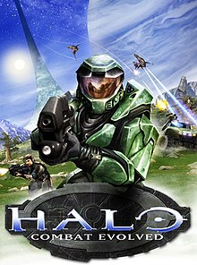
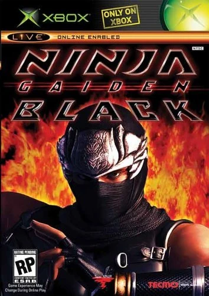
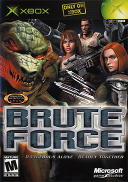
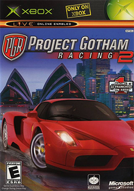
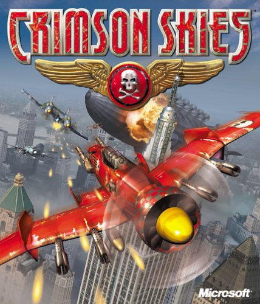

1: Halo: Combat Evolved

Halo: Combat Evolved, comúnmente conocido como Halo, Halo CE o Halo 1, es un videojuego de disparos en primera persona desarrollado por Bungie Studios y publicado
por Microsoft Game Studios el 15 de noviembre de 2001, a manera de título debut de la videoconsola Xbox,1 y de la cual es considerado como su aplicación asesina.7
Es el primer juego de la franquicia Halo.
2: Ninja Gaiden Black

Ninja Gaiden es un juego de acción-aventura para la consola de videojuegos Xbox. Team Ninja desarrollo el juego durante 5 años. Este juego difiere mucho a Ninja Gaiden para el Nintendo Entertainment System, Ha recibido elogios de la critica, con varias publicaciones proclamando que uno
de los juegos mas dificiles que se han hecho.
3: Brute Force

Brute Force es un videojuego lanzado para Xbox por Microsoft en 2003. El juego es un juego de disparos en tercera persona basado en escuadrones que utiliza
cuatro miembros de un equipo que luchan en numerosas batallas. Cada personaje del equipo tiene sus propias fortalezas y debilidades.
4: Project Gotham Racing 2

Project Gotham Racing 2 es un videojuego de carreras desarrollado por Bizarre Creations y publicado por Microsoft Game Studios. Fue lanzado exclusivamente
para Xbox en noviembre de 2003.
5: Crimson Skies

Crimson Skies es un videojuego simulador de vuelo arcade desarrollado por Zipper Interactive y publicado en 2000 por Microsoft Games.
Aunque es un juego basado en vuelos, Crimson Skies no es un simulador de vuelo genuino, ya que el juego se basa menos en mecánica de vuelo que en acción.